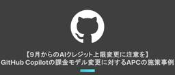
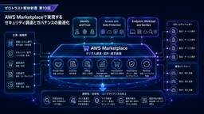
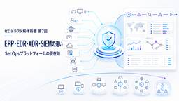
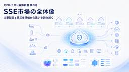
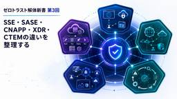
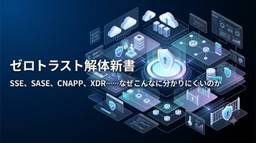

APC 技術ブログ
https://techblog.ap-com.co.jp/
株式会社エーピーコミュニケーションズの技術ブログです。
フィード

【OCI】Oracle AI Autonomous Database 2025 Professional合格記
APC 技術ブログ
目次 目次 はじめに 資格の概要 受験の目的 受験前のスペック 試験の詳細 概要 範囲 合格へのルート 学習教材 学習サイクル 工夫した点 試験のポイント 受験してみた感想 さいごに おわりに はじめに こんにちは、エーピーコミュニケーションズの松尾です。 Oracle Cloud Infrastracture（OCI）の認定試験であるOracle AI Autonomous Database 2025 Professional (旧 Oracle Autonomous Database Cloud 2025 Professional)を受験して合格したので学習内容を紹介したいと思います。受験…
4日前

【9月からのAIクレジット上限変更に注意を】GitHub Copilotの課金モデル変更に対するAPCの施策事例
APC 技術ブログ
はじめに 6月1日 課金モデルの変更 6月2日 衝撃、走る 6月4日 使用量の追加 自分の使用量を把握できない問題の解決 なんとか6月を乗り切る 現在、そして今後 【重要】組織向けプランのプロモーション期間の終了 ACS 事業部のご紹介 はじめに 2026年6月1日にGitHub Copilotの課金モデルが変更されました。 本記事ではこの変更に伴い、APCが実施した施策を公開・共有します。 GitHub TeamプランとGitHub Copilot Businessプランを前提としていますが、他の組織向けプランでも参考にしていただける内容となっています。 また本記事は、イベント『すきやねん …
4日前

【さくらのクラウド】K3sを構築してOpenTelemetry Operatorのゼロコード自動計装を検証した
APC 技術ブログ
さくらのクラウドの「モニタリングスイート」とOTel Operatorを組み合わせ、マルチノードK3s環境におけるゼロコードPod自動計装およびPod間の分散トレースを検証しました。
5日前

【ゼロトラスト解体新書 第10回】AWS Marketplaceで実現するセキュリティ調達とガバナンスの最適化
APC 技術ブログ
こんにちは、エーピーコミュニケーションズ 0-WANの山根です。 前回の記事では、0-WANが考えるゼロトラスト・リファレンスアーキテクチャとして、次の3つを中核とする構成を整理しました。 IdP/IDaaS Zscaler CrowdStrike 前回の記事はこちらです。 【ゼロトラスト解体新書 第9回】0-WANが考えるゼロトラスト・リファレンスアーキテクチャ――IdP＋Zscaler＋CrowdStrikeで中核を構成する 第9回では、Identity、Endpoint、Access、Data、Cloud、SecOpsを、役割の異なる3つの専門プラットフォームへ集約する考え方を紹介しまし…
6日前

【ゼロトラスト解体新書 第9回】0-WANが考えるゼロトラスト・リファレンスアーキテクチャ ～IdP＋Zscaler＋CrowdStrikeで中核を構成する～
APC 技術ブログ
こんにちは、エーピーコミュニケーションズ 0-WANの山根です。 前回の記事では、ゼロトラスト関連製品の構成を、次の4つのパターンに分けて比較しました。 ポイント製品積み上げ型 単一ベンダー統合型 クラウドスイート中心型 3プラットフォーム型 前回の記事はこちらです。 【ゼロトラスト解体新書 第8回】ゼロトラスト製品は統合すべきか――4つの構成パターンを比較 どの構成にもメリットと注意点があります。 各領域で専門製品を選べば、高度な機能を利用しやすい一方で、管理画面、Endpoint Agent、契約、ログ、ポリシー、運用が複雑になります。 一社へ統合すれば、管理対象を減らしやすい一方で、ベン…
6日前

【ゼロトラスト解体新書 第8回】ゼロトラスト製品は統合すべきか ～4つの構成パターンを比較～
APC 技術ブログ
こんにちは、エーピーコミュニケーションズ 0-WANの山根です。 前回の記事では、EPP、EDR、XDR、SIEM、SOARなどの違いを整理し、Endpoint Securityが、単体のマルウェア対策からSecurity Operations全体を支えるプラットフォームへ広がっていることを紹介しました。 前回の記事はこちらです。 【ゼロトラスト解体新書 第7回】EPP・EDR・XDR・SIEMの違い――SecOpsプラットフォームの現在地 ここまでの連載では、ゼロトラストを構成する機能、統合ソリューション、Identity Security、SSE、SecOpsなどを、それぞれ分解してきまし…
6日前

【ゼロトラスト解体新書 第7回】EPP・EDR・XDR・SIEMの違い ～SecOpsプラットフォームの現在地～
APC 技術ブログ
こんにちは、エーピーコミュニケーションズ 0-WANの山根です。 前回の記事では、主要なSecurity Service Edge（SSE）製品として、Zscaler、Netskope One SSE、Palo Alto Networks Prisma Accessを取り上げ、機能、アーキテクチャ、データ保護、ZTNA、運用の違いを整理しました。 前回の記事はこちらです。 【ゼロトラスト解体新書 第6回】主要SSE製品を比較――機能・アーキテクチャ・運用の違い SSEは、ユーザーや端末からWeb、SaaS、プライベートアプリケーションへのアクセスを保護する重要な基盤です。 しかし、安全なアクセ…
6日前

【ゼロトラスト解体新書 第6回】主要SSE製品を比較 ～機能・アーキテクチャ・運用の違い～
APC 技術ブログ
こんにちは、エーピーコミュニケーションズ 0-WANの山根です。 前回の記事では、Security Service Edge（SSE）市場の全体像と、Gartnerなどの第三者評価を製品選定へどのように活用すべきかを整理しました。 前回の記事はこちらです。 【ゼロトラスト解体新書 第5回】SSE市場の全体像――主要製品と第三者評価から違いを読み解く 今回は、主要なSSE製品として、次の3つを比較します。 Zscaler Netskope One SSE Palo Alto Networks Prisma Access 各社の製品ページを見ると、いずれもSWG、CASB、ZTNA、DLP、FWa…
6日前

【ゼロトラスト解体新書 第5回】SSE市場の全体像 ～主要製品と第三者評価から違いを読み解く～
APC 技術ブログ
こんにちは、エーピーコミュニケーションズ 0-WANの山根です。 前回の記事では、ゼロトラストにおけるアクセス判断の起点となるIdentity Securityについて、IdP、IGA、PAM、ITDRの役割を整理しました。 前回の記事はこちらです。 【ゼロトラスト解体新書 第4回】Identity Securityの全体像――IdP・IGA・PAM・ITDRの役割 今回は、ユーザーや端末からWeb、SaaS、プライベートアプリケーションへのアクセスを保護するSecurity Service Edge（SSE）について整理します。 SSE製品を調べると、非常に多くのベンダーが見つかります。 Z…
6日前

【ゼロトラスト解体新書 第4回】Identity Securityの全体像 ～IdP・IGA・PAM・ITDRの役割～
APC 技術ブログ
こんにちは、エーピーコミュニケーションズ 0-WANの山根です。 前回の記事では、SSE、SASE、CNAPP、XDR、CTEMについて、それぞれが何を守り、どのような役割を担っているのかを整理しました。 前回の記事はこちらです。 【ゼロトラスト解体新書 第3回】SSE・SASE・CNAPP・XDR・CTEMの違いを整理する 第1回から第3回までは、複雑化したゼロトラスト関連の機能やソリューションを一度分解し、全体像を整理してきました。 今回からは第2部として、具体的な市場と製品領域を見ていきます。 最初に取り上げるのは、ゼロトラストにおけるアクセス判断の起点となるIdentity Secur…
6日前

【ゼロトラスト解体新書 第3回】SSE・SASE・CNAPP・XDR・CTEMの違いを整理する
APC 技術ブログ
こんにちは、エーピーコミュニケーションズ 0-WANの山根です。 前回の記事では、ゼロトラストを構成するセキュリティ機能を、次の7領域に分けて整理しました。 Identity & Access Device & Endpoint Network & Edge Application & Workload Data & AI Visibility & Risk Operations & Governance 前回の記事はこちらです。 【ゼロトラスト解体新書 第2回】ゼロトラストを構成するセキュリティ機能を整理する セキュリティ機能を一つずつ見ていくと、それぞれが何を守るものなのか、少しずつ分かる…
6日前

【ゼロトラスト解体新書 第2回】ゼロトラストを構成するセキュリティ機能を整理する
APC 技術ブログ
こんにちは、エーピーコミュニケーションズ 0-WANの山根です。 前回の記事では、SSE、SASE、CNAPP、XDRなどの新しい言葉が増え、ゼロトラストの全体像が分かりにくくなった背景を整理しました。 前回の記事はこちらです。 【ゼロトラスト解体新書 第1回】SSE、SASE、CNAPP、XDR……ゼロトラストはなぜこんなに分かりにくくなったのか ゼロトラストを調べていると、非常に多くの製品やセキュリティ用語が登場します。 例えば、Identityの領域だけでも、IAM、IdP、SSO、MFA、IGA、PAM、ITDR、CIEM、NHIなどがあります。 ネットワークやアクセスの領域では、SW…
6日前

【ゼロトラスト解体新書 第1回】SSE/SASE/CNAPP/XDR……ゼロトラストはなぜこんなに分かりにくくなったのか
APC 技術ブログ
こんにちは、エーピーコミュニケーションズ 0-WANの山根です。 セキュリティの仕事をしていると、ここ数年で新しい言葉が本当に増えたと感じます。 SSE、SASE、CNAPP、XDR、CTEM、DSPM、ITDR、ASM、SSPM……。 一つひとつ調べれば、何となく意味は分かります。 しかし、これらをまとめて見たときに、 結局、どの機能が何を守っているのか？ それぞれの製品は、どこまで同じで、どこから違うのか？ 自社には、どの製品が必要なのか？ と聞かれると、急に説明が難しくなります。 私自身も、新しい製品や機能を調べるたびに、また新しいセキュリティ用語が増えた……と思うことがあります。 更に…
6日前

【えひめICTトレンドセミナー2026】「前例がない」で断れてしまうのはなぜ？ ツール導入の現場のリアルとその解決策
APC 技術ブログ
えひめICTトレンドセミナー2026で聴講した、情シス主導のDXの進め方と変革が進む企業とそうでない企業の違いについてのレポート記事です。 はじめに 本ブログを執筆した経緯 実は技術より人の関係や感情が大事？現場のリアル どうやって進めるのが良いのか セミナー視聴を通じて考えたこと おわりに はじめに こんにちは、2026年度新卒で入社いたしましたクラウド事業部の吉田愛です。 本記事の目的はえひめICTトレンドセミナー2026に参加した際に私が得た発見と感想を共有することです。 2本目の技術ブログ執筆になるのでまだまだ未熟な点が多いかと思いますが、温かい目で読んでいただけたら幸いです。 本ブロ…
8日前
【OCI】Oracle Cloud Infrastructure 2025 Generative AI Professional 合格記
APC 技術ブログ
目次 目次 はじめに どんなひとに読んで欲しい OCI Generative AI Professionalとは 受験してみての感想 学習方法 おわりに お知らせ はじめに こんにちは、クラウド事業部の志賀です。 今回Oracle Cloud Infrastructure 2025 Generative AI Professionalに合格できました。 学習方法や学習期間についてご紹介できればと思いますので、受験を考えている方の参考になれば幸いです。 どんなひとに読んで欲しい Generative AI Professionalの勉強方法を知りたい人 AI系の資格を取得したい人 OCI Gen…
10日前
【Zscaler】図解でZscalerの全体像を10の機能領域で理解する
APC 技術ブログ
こんにちは、エーピーコミュニケーションズ 0-WANの山根です。 昨今はAIの進化も早いですが、Zscaler社の機能実装スピードも飛びぬけて早いです・・・ しばらく学習をさぼっているうちに様々な機能が増えていましたので、一度整理してみました。 ZIA/ZPA/ZDXからData,AI Security,Agentic SecOpsまで 企業のクラウド利用やテレワークが一般化したことで、従来のように「社内ネットワークの境界をファイアウォールで守る」だけでは、ユーザー、端末、アプリケーション、データを十分に保護することが難しくなっています。 Zscalerというと、インターネットアクセスを保護す…
13日前
【AI Security】「いずれ起きる」は、もう起きた
APC 技術ブログ
こんにちは、エーピーコミュニケーションズ 0-WANの山根です。 今週末はOpenAIのあのニュースで情報収集に明け暮れてました。 わかりやすく記事にまとめてみましたので通勤時間などに是非見ていただけますと幸いです。 ～Claude MythosからOpenAI・Hugging Face事案に学ぶAI時代のゼロトラスト～ 本記事について 本記事は、2026年7月26日時点でOpenAI、Hugging Face、Anthropicなどが公開している情報を基に執筆しています。 OpenAIとHugging Faceによる調査は継続中であり、今後の公式発表によって内容が更新される可能性があります。…
13日前
【OCI】Oracle Cloud Infrastructure 2025 Networking Professional 合格記
APC 技術ブログ
はじめに こんにちは、クラウド事業部の藤江です。 Oracle Cloud Infrastructure 2025 Networking Professionalに合格することが出来ました。 2回不合格となりましたが何とか3回目の受験で合格することが出来ました。 試験概要 主にネットワークに関する知識を問う試験です。OCIのネットワークサービスの設計、構築、運用に関する知識が必要です。下記のサイトに試験の概要が記載されています。こちらを参照してください。 Exam 1Z0-1124-25: Oracle Cloud Infrastructure 2025 Networking Professi…
16日前
【Zscaler】Zscaler ACE Day 参加レポート
APC 技術ブログ
こんにちは、エーピーコミュニケーションズ 0-WANの山根です。 今年もZscaler ACE Dayに参加してきましたのでレポートをお届けします！ 今年も Zscaler ACE Day に参加してきました。 Zscaler ACE Dayは、ZscalerのテクニカルチャンピオンであるACEメンバー、およびACE候補者向けに開催される特別なイベントです。製品アップデートだけではなく、Zscalerが今どのような市場変化を見ているのか、パートナーにどのような役割を期待しているのか、そして私たちがどのようにお客様へ価値を届けていくべきなのかを深く学べる場でもあります。 今回のイベントで最も印象…
17日前
【SRE NEXT 2026と2025】NOCブースへの敬意を込めて、その魅力を紹介する
APC 技術ブログ
SRE NEXT 2026と2025の参加レポート。会場ネットワークを支える「NOCブース」の魅力と監視技術を紹介します。トラブルへ迅速に対応し、Day1からDay2へと進化する運用の舞台裏をファン目線で語ります。
18日前
Microsoft公式のAgenticAI時代のプラットフォームエンジニアリングフレームワーク「git-ape」入門
APC 技術ブログ
git-apeって何？ セットアップ オンボーディング スケジュールドリフト検知機能を有効化するかどうか？ ポリシーチェック時に参考にするレベルはどれか？ ポリシーチェックに引っかかった際にどのように動作するべきか？ 実際に作らせてみる：Container Appsのデプロイ 良いと感じたところ プロンプトで指示を出した内容の構成を、デプロイが正常に完了するまで一気通貫でエージェントが実装してくれる 実際のデプロイを行う前にチェックを行う仕組みがあるのは便利 気になったこと サンプルリソースのデプロイだけではコードなどは払い出されなかった オンボーディングの途中などで、スクリプトを払い出して対…
19日前
FY26 Zscaler Partner Top Sales Tour 2026 参加レポート【第2部/最終回】
APC 技術ブログ
こんにちは、エーピーコミュニケーションズ 0-WANの山根です。 前回の第1部では、「FY26 Zscaler Partner Top Sales Tour」で紹介された内容から、Zero Trustの歴史や基本原則、そして企業に求められるセキュリティが「製品を導入した状態」から「統制内容を説明できる状態」へ変化していることを整理しました。 シリーズ最終回となる第2部では、Zscalerの上原さんからご説明いただいた、AIエージェントに対するZero Trustについて紹介します。あわせて、製造業で想定される活用例や、お客様との会話で確認したいポイントまで整理します。 AIエージェントは新しい…
19日前
【Backstage】 New Frontend System導入ガイド （Part3「Catalog Overview/Tabへの追加」）
APC 技術ブログ
はじめに 皆さんこんにちは。エーピーコミュニケーションズ ACS事業部 亀崎です。 第1回、第2回と回を重ね、今回はBackstage New Frontend System導入ガイドの第3回になります。 techblog.ap-com.co.jp techblog.ap-com.co.jp 今回やっとNew Frontend Systemで導入が簡単になったよ、ということがご紹介できると思います。 ある意味New Frontend Systemのコアな部分が今回のテーマです。 これまでCatalogのOverviewやTabに新しい機能を導入する際には、PluginをInstallしたあとR…
22日前
【Zscaler】FY26 Zscaler Partner Top Sales Tour 2026 参加レポート【第1部】
APC 技術ブログ
こんにちは、エーピーコミュニケーションズ 0-WANの山根です。 今年も、Zscalerがパートナー企業を対象に開催する「FY26 Zscaler Partner Top Sales Tour」に参加しました。 今回の開催地は前回に引き続き沖縄で実施されました。 AI時代のZero Trustは次のステージへ セッションでは、Zscalerの最新動向だけでなく、Zero Trustの歴史や基本原則、企業に求められるセキュリティ統制、AIエージェント時代に向けた新しいセキュリティの考え方まで、幅広いテーマが取り上げられました。 今回、Zero Trustの本質や企業に求められる統制については、Z…
23日前
【Zscaler】ZIA経由でFTPS通信を行う方法
APC 技術ブログ
今回は以下のケースを参考に、Zscaler Internet Access(以下、ZIA)経由でFTPS通信を行う際の設定方法をご紹介します。
1ヶ月前
【さくらのクラウド】安否確認システムでPIIマスキングのすり抜けとトレースによる更新追跡を検証した
APC 技術ブログ
さくらのクラウド「モニタリングスイート」とsacloud-otel-collectorを用い、構造化PII（電話番号等）の正規表現マスキングを検証。表記ゆれによるすり抜けや誤マスクのリスクを示し、トレースとログ相関による安否確認更新の事後追跡検証をまとめています。
1ヶ月前
【Backstage】 New Frontend System導入ガイド （Part2「サイドメニューの設定」）
APC 技術ブログ
はじめに 皆さんこんにちは。エーピーコミュニケーションズ ACS事業部 亀崎です。 前回に引き続き、BackstageのNew Frontend System導入ガイドになります。 techblog.ap-com.co.jp 今回のテーマは「サイドメニュー」。サイドメニューというのは様々な情報の入口でもあり、「この部分は常時表示させたい」や「順序はこうしたい」といった思い入れも出てくるところになります。 そうしたサイドメニューはどのように設定できるのかを今回はご紹介しています。 New Frontend Systemにおける サイドメニューの設定 いろいろ簡単になったよ、というご紹介をする予定…
1ヶ月前
【OCI】Multicloud Architect Professional合格記
APC 技術ブログ
目次 目次 はじめに 資格の概要 受験の目的 受験前のスペック 試験の詳細 概要 範囲 合格へのルート 学習教材 学習サイクル 工夫した点 試験のポイント 受験してみた感想 さいごに おわりに はじめに こんにちは、エーピーコミュニケーションズの松尾です。 Oracle Cloud Infrastracture（OCI）の認定試験であるMulticloud Architect Professionalを受験して合格したので学習内容を紹介したいと思います。受験を検討中の方の参考になれば幸いです。 資格の概要 OCIとAzure、Google Cloudのパブリッククラウドとの接続や構成について問…
1ヶ月前
「AI & Data - Agentic Hack ~Foundry IQ × Fabric IQ Challenge~」開催レポート
APC 技術ブログ
はじめに こんにちは、iTOC事業部GDAI部-Lakehouseの林です。 株式会社エーピーコミュニケーションズ(以下、APC)は、2026年6月29日(月)、日本マイクロソフト株式会社と共催で「AI & Data - Agentic Hack ~Foundry IQ × Fabric IQ Challenge~」を開催しました。今回はコーチ兼レポーターとして、イベント当日の様子をお届けします！ 本イベントは、2026年3月に開催した「AI & Data – Agentic Hack」に続く第2弾です。前回は多くのご好評をいただいたことを受け、今回は「Microsoft Build 2026…
1ヶ月前
【Backstage】 New Frontend System導入ガイド （Part1「SSOの設定」）
APC 技術ブログ
はじめに 皆さんこんにちは。エーピーコミュニケーションズ ACS事業部 亀崎です。 早いもので2026年も半分を過ぎました。2026年のBackstageに関する大きなニュースの１つとして「New Frontend System（NFS）」が挙げられるのではないでしょうか。 techblog.ap-com.co.jp いままで課題であった「コードを書く」という部分がかなり削減されるらしいぞ、簡単になるらしいぞ、というのはわかるのですが、いざ実際にやろうとすると、 「この部分はどうなるんだろうか？」「どのように指定すればいいのだろうか？」といったところが出てきます。 そうした点があって、なかなか…
1ヶ月前